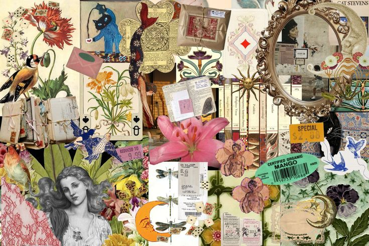

Creative & Active Pursuits
Leisure & Gaming
- Playing Games (Mobile Legends, Clash of Clans, Snake.io)
- Caring for My Cats, Rabbit & Chickens
- Exploring Local Foods
- Doomscrolling TikToks & Reels
Favorite Way to Unwind
Above all, resting is the most rewarding gift I can give myself after a long, productive week.